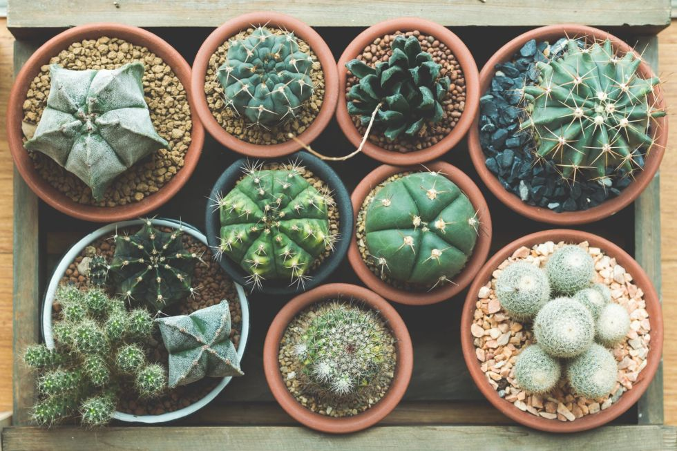
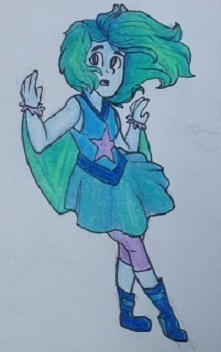
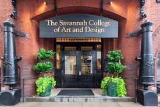

I was born and grew up in Boiling Springs, SC for the majority of my life, and moved here the summer before freshman year. I grew up with my dad, sister, and two dogs, Andy and Bismark. We would occasionally visit my stepfamily. My past includes a lot of travelling, from Montana to North Carolina, to D.C., and even to Turks and Caicos. I hope to add to this list in the future.
Most of my relatives live in Montana. I currently live with my dad, sister, and 2 dogs. My stepmom and half sister drop by from time to time, and I enjoy their company whenever they're over. I can't deny that my home life is quite complicated, (my dad runs a company and my sister is in college) but I try my best to be grateful for all that I have.
In the past few years I feel I've changed as a person for the better. I've met new people, learned new skills, and realized I'd like to make a change in the world. Making friends in other countries, broadening my own views, and the experiences I've had have helped me to grow as a person. I've struggled with anxiety and things in the past, and still do, but I'm hoping that will change soon. I've learned ways to help and listen to others' struggles, and have begun to apply the information to other things as well. I'd like to be able to say I've done something to help the world, even if I'm only changing one person's life.
I've gained an interest in drawing, along with writing and poetry, and music. It's probably obvious by now I'm not a math fanatic. Along with art, I have a slight obsession with manatees, plants, pastel things, photography, and cartoons. I'm basically a 6 year old at heart. Finding others that have similar views is always exciting to me, because I love being able to connect with people, despite my introversion. I've found ways to connect with people and see how they act; I've always been curious about the reasons why people are the way they are. I have a variety of interests and a complex personality, to be truthful. But I've grown to appreciate it's uniqueness.
I have a lot of hopes for the future, even if some of them are pretty unlikely of ever happening. I'm planning on going to college after high school, and hoping I have the opportunity to go to SCAD. I'd like to be able to move into an apartment after high school, also. In the near future I'm planning to start a webcomic, if I have any luck. I have a feeling it'd help me to progress my art, and may even aid me in getting into an art school. I'd like to be able to do more travelling in the future, also. My main goal for the future is to be able to make a positive impact on the world.
